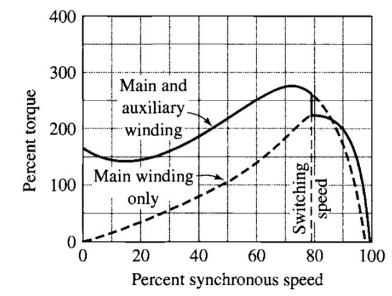
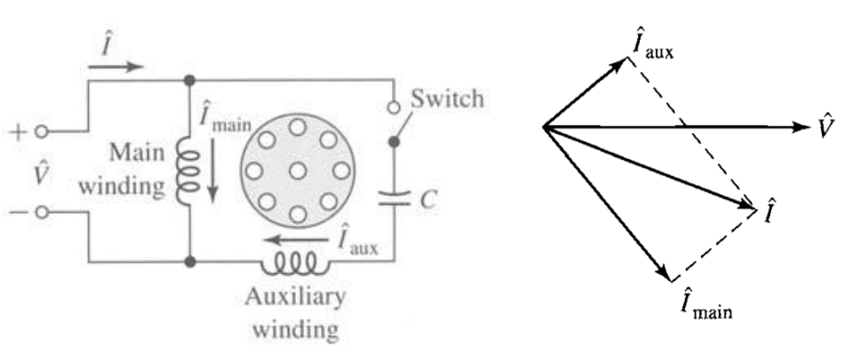
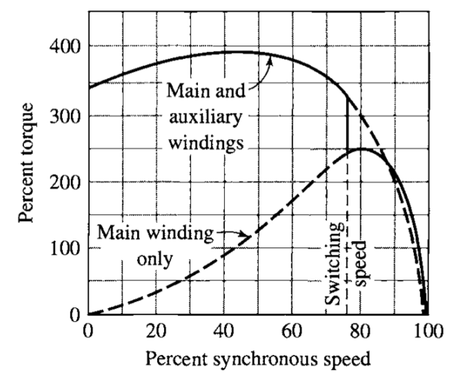
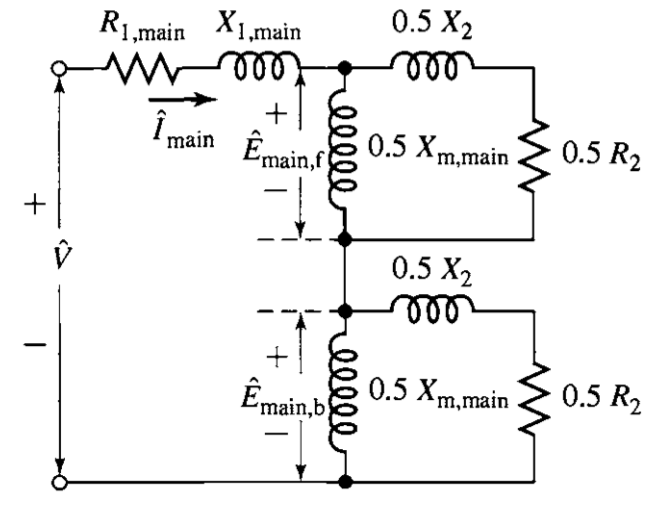
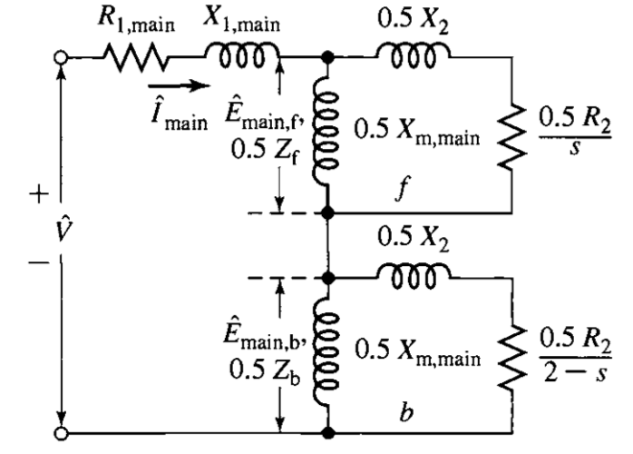

class: center, middle # EE-362 ELECTROMECHANICAL ENERGY CONVERSION-II # Single Phase Induction Motors ## Ozan Keysan [ozan.keysan.me](http://ozan.keysan.me) Office: C-113 <span class="meta">•</span> Tel: 210 7586 --- # Single Phase Induction Motors -- ## Remember Rotating MMF? <img src="http://www.ece.umn.edu/users/riaz/animations/sinvec.gif" alt="Drawing" style="width: 800px;"/> ## We use three pulsating wave to create a moving wave. --- # Single Phase Induction Motors -- # What would happen if there is only one phase in the stator? <img src="http://people.ucalgary.ca/~aknigh/electrical_machines/other/images/figs/spim_schematic.jpg" alt="Drawing" style="width: 350px;"/> -- # A pulsating flux density will be produced! --- # Pulsating MMF? -- ## \\(\mathrm{F(\theta, t)} = N k\_w I\_{max} cos (\omega t) cos (\theta\_e)\\) ## \\(\mathrm{F(\theta, t)} = F\_{max} cos (\omega t) cos (\theta\_e)\\) -- - ### \\(cos (\omega t)\\): Time dependent component - ### \\(cos (\theta\_e)\\): Position dependent component --- # Pulsating MMF? ## A pulsating MMF can be separated into two components -- ### \\(\mathrm{F(\theta, t)} = \dfrac{1}{2} F\_{max} [cos (\theta\_e + \omega t)+ cos (\theta\_e - \omega t)]\\) ### \\(\omega t\\): Forward rotating component ### \\(-\omega t\\): Reverse rotating component --- # Pulsating MMF? ## A pulsating MMF can be separated into two components <img src="http://clas.mq.edu.au/speech/acoustics/frequency/resonance_files/standing003.gif" alt="Drawing" style="width: 700px;"/> --- # Pulsating Wave ## Double revolving field theory? -- ## A pulsating wave is addition of 2 waves moving in the opposite directions. ### [Wave Tank Experiment](https://www.youtube.com/watch?v=NpEevfOU4Z8), [Acoustic Levitation](https://www.youtube.com/watch?v=0K8zs-KSitc) --- # Single Phase Induction Motors ## There are two phasors moving in the opposite directions: [Animation](http://people.ucalgary.ca/~aknigh/electrical_machines/other/images/flash/single_pulse.swf) <img src="http://www.ibiblio.org/kuphaldt/electricCircuits/AC/02485.png" alt="Drawing" style="width: 700px;"/> --- # Torque in a 3-phase Induction Machine -- <img src="http://raise.spd.louisville.edu/ECE252/images/L19-18.gif" alt="Drawing" style="width: 600px;"/> --- # [Torque](https://docs.google.com/spreadsheets/d/1YVq94hV64z6VSiN8q-v7XydcfLR3xLdcp-5GhdYZg6Y/edit?usp=sharing) in a Single Phase Induction Machine? -- <img src="http://www.electrical4u.com/images/february16/1456578543.gif" alt="Drawing" style="width: 500px;"/> ### Resultant torque of single-phase induction motor is zero at stationary. ### Motor cannot self-start, we need some modifications. --- # What about two-phase configuration? -- ## Will it create a rotating MMF? -- <img src="http://www.powerguru.org/wordpress/wp-content/uploads/2012/08/Two-phase-AC-machine-where-there-is-a-fixed-field-system-on-the-rotor.jpg" alt="Drawing" style="width: 700px;"/> --- # What about two-phase configuration? ## Will it create a rotating MMF? <img src="http://i.stack.imgur.com/FULre.png" alt="Drawing" style="width: 700px;"/> --- # What about two-phase configuration? ## Will it create a rotating MMF?: YES <img src="https://c.mql5.com/2/3/phasor.gif" alt="Drawing" style="width: 700px;"/> [Animation](http://www.ece.umn.edu/users/riaz/anim/dq_transformations.html) --- # Two-phase winding can create rotating MMF -- # but, how can you imitate two phase excitation, using a single-phase supply? --- # Split-Phase Motors -- ## Two orthogonal(\\(\pi / 2 \\) electrical) windings: -- ## 1- Main (running) Winding: -- ## 2- Auxiliary (starting) Winding: -- - ### Higher resistance-to-reactance (R/X) ratio -- - ### A thinner wire is used --- # Split-Phase Motors ### Unbalanced winding creates phase difference even if the same voltage is applied <img src="http://electrical4u.com/electrical/wp-content/uploads/2013/08/split-phase-induction-motor.png" alt="Drawing" style="width: 700px;"/> [Split-phase machine animation](http://people.ucalgary.ca/~aknigh/electrical_machines/other/images/flash/main_aux_pulse.swf) --- # Split-Phase Motors ### Creates a net torque at start  --- # Centrifugal Switch ### Disconnects the axillary switch when the machine reaches 75% of \\(\omega_s\\), from this point the machine is a single phase machine <img src="http://motorinduction.weebly.com/uploads/1/3/9/6/13964537/_3816596_orig.png" alt="Drawing" style="width: 500px;"/> [Electronic Centrifugal Switches](https://www.youtube.com/watch?v=xlXXXVflLuc) --- # Split-Phase Motors <img src="http://3.bp.blogspot.com/_G2DcxjbHspE/TFhvi38ZjMI/AAAAAAAAACI/TqGI53KIArc/s320/split+phase.GIF" alt="Drawing" style="width: 300px;"/> - ### Moderate starting torque - ### Low starting current - ### Used in fans, pumps, office equipment --- # Capacitor-start Type Motors -- ## Phase displacement is created by a series capacitor instead of using unbalanced windings -- <img src="http://sub.allaboutcircuits.com/images/02488.png" alt="Drawing" style="width: 500px;"/> --- # Capacitor-start Type Motors  --- # Capacitor-start Type Motors  --- # Capacitor-start Type Motors <img src="http://sub.allaboutcircuits.com/images/02488.png" alt="Drawing" style="width: 400px;"/> - ## High starting torque - ## Used in compressors, refrigerators --- # Capacitor-start Type Motors <img src="http://www.zj-ty.com/pic/201211613595655509.jpg" alt="Drawing" style="width: 600px;"/> ### [How does a single phase induction motor work?](https://www.youtube.com/watch?v=awrUxv7B-a8) --- # Other Types # Permanent-split capacitor motor <img src="http://sub.allaboutcircuits.com/images/02486.png" alt="Drawing" style="width: 500px;"/> --- # Other Types ## Capacitor-run motor <img src="http://sub.allaboutcircuits.com/images/02489.png" alt="Drawing" style="width: 500px;"/> --- ## Equivalent Circuit of Single Phase Induction Motors -- ### Equivalent circuit of a 3-phase machine can be divided into two parts on the rotor side: -- - ### Forward rotating component - ### Bckward rotating component --- ## Equivalent Circuit of Single Phase Induction Motors -- ## At standstill  --- ## Equivalent Circuit of Single Phase Induction Motors ## While running  --- ## Equivalent Circuit of Single Phase Induction Motors # Beware of difference in slips ## Forward rotating component = s ## Backward rotating component = 2-s --- # Example: ## A 4-pole single-phase induction motor is rotating at 1425 rpm when connected to 230 V, 50 Hz supply. ## It has the following circuit parameters: - ### \\(R\_1 = 2 \Omega\\), \\(X\_1 = 2.8 \Omega\\) - ### \\(r\_2' = 4 \Omega\\) - ### \\(X\_2' = 2 \Omega\\) - ### \\(X\_m = 66 \Omega\\) --- # Example: ## A 4-pole single-phase induction motor is rotating at 1425 rpm when connected to 230 V, 50 Hz supply. -- ## a) Calculate the slip for forward and reverse components -- ## b) Draw the equivalent circuit -- ## c) Calculate the torque of the motor --- # Example: (MT-2, 2000, Q2) ### 380 V(l-l) 40 kVA, 50 Hz Y connected, 6 pole cylindrical rotor synchronous mmachine operateas as an isolated generator. The synchronous reactance(Xs) is \\(1 \Omega\\)/phase. Neglect armature resistance. The field is adjusted to get 380 V at no load. -- ### a) What is the terminal voltage and voltage regulation if the generator is loaded with -- ### i) rated current at unity power factor -- ### ii) rated current at 0.8 pf lagging -- ### iii) rated current at 0.8 pf leading --- # Example: (MT-2, 2000, Q2) ### 380 V(l-l) 40 kVA, 50 Hz Y connected, 6 pole cylindrical rotor synchronous mmachine operateas as an isolated generator. The synchronous reactance(Xs) is \\(1 \Omega\\)/phase. Neglect armature resistance. The field is adjusted to get 380 V at no load. -- ## b) How much shaft torque must be applied by the prime-moved at rated load with unity power factor conditions, if the friction and windage loss is assumed to be 1 kW. --- # Example: (MT-2, 2000, Q2) ### 380 V(l-l) 40 kVA, 50 Hz Y connected, 6 pole cylindrical rotor synchronous mmachine operateas as an isolated generator. The synchronous reactance(Xs) is \\(1 \Omega\\)/phase. Neglect armature resistance. The field is adjusted to get 380 V at no load. -- ## c) What is the load current and power factor for maximum power to be produced by the generator at rated terminal voltage --- ## You can download this presentation from: [keysan.me/ee362](http://keysan.me/ee362) ---